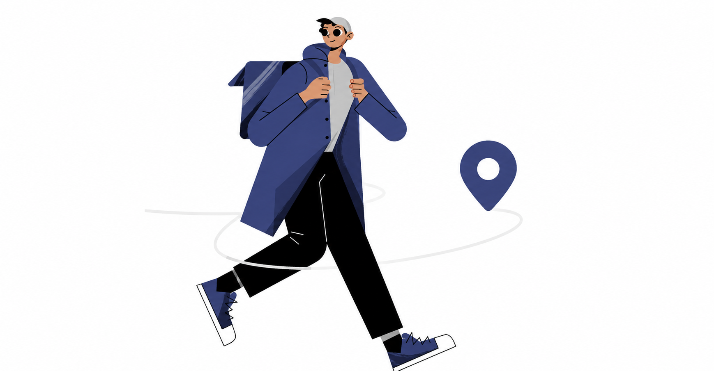

Your parcel is already at BMU.
Let a student bring it the rest of the way. CampusCarry connects students who need a parcel collected with students already moving between BMU's academic buildings, library, hostels and other campus facilities.

The Concept
Someone is already going there.
Students at BMU already move between classes, the library, hostels, cafeteria and other campus facilities throughout the day.
A parcel may be waiting at a campus delivery point while the student who needs it is somewhere else on campus.
CampusCarry connects those two journeys.
Parcel at Delivery Point
A student is attending classes at the Academic Block while an incoming parcel arrives at a campus collection area.
Student Walking Nearby
Another BMU student is already walking past that area on their way back to the hostels or dining facilities.
Campus Delivery Completed
The parcel travels along an existing walking journey. The recipient receives their parcel, and the runner earns a peer reward.
Workflow
How It Works
A direct three-step process built around the flow of student movement at BMU.
Request
Tell us where your parcel needs to be collected and where you need it delivered on campus.
Match
A BMU student already heading that way accepts the delivery.
Deliver
Meet at an agreed campus location and complete the handoff.
For Student Runners
Already heading that way?
Turn your regular walk across campus into a useful delivery. Rather than working fixed shifts, accept delivery requests that naturally align with routes you already take between the Academic Block, library, cafeteria, and hostels.
Flexible by design
Pick up deliveries only when you have free time between classes. No minimum hours or fixed shifts.
Direct peer rewards
Requesters specify a delivery reward upfront. You earn directly for walking routes you were already taking.
Familiar campus locations
All pickups and handoffs happen at recognized BMU facilities and common meeting areas.
Illustrative Campus Route
Class ends
Student is already heading this way
Parcel handoff
Illustrative example of student movement between campus facilities
Campus Delivery Network
How parcels move across BMU
Parcels can be collected from delivery points and handed off at convenient campus locations along a student's existing route.
FAQ
Frequently asked questions
Common questions about parcel requests, delivery handoffs, and runner coordination at BMU.
Requesters and runners coordinate a convenient meeting point on campus, such as outside an academic block, near the hostels, or by the library. Both students verify the package before completing the handoff.
Parcels can be collected from designated campus drop-off spots or delivery areas where student shipments arrive.
Handoffs typically happen in open, accessible campus areas, such as hostel entry gates, the cafeteria plaza, or outside lecture halls.
The student requesting delivery specifies the reward amount when creating the request. Runners review the pickup location, destination, and offered reward before deciding to accept.
Yes. Any BMU student can post delivery requests when busy with classes or labs, and accept delivery tasks when walking across campus.
Need your parcel?
Someone is already on the move across BMU.